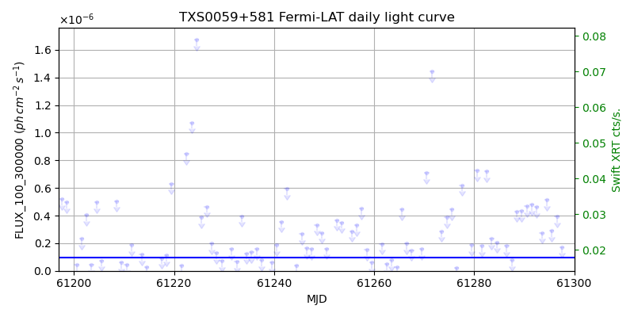
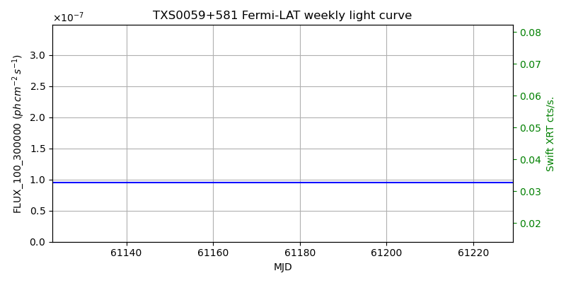
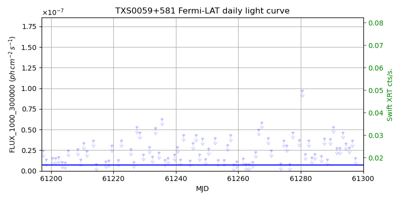
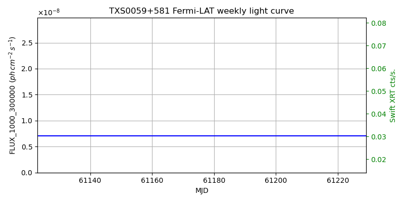

LAT Lightcurve site: https://fermi.gsfc.nasa.gov/ssc/data/access/lat/msl_lc/source/TXS_0059p581
Swift site: https://www.swift.psu.edu/monitoring/source.php?source=TXS0059+581
NED: Query
Time of last update of this page: UT: 2026-09-15 15:11 (MJD: 61298.633)
| Property | Value |
|---|---|
| R.A. | 1:02:45.84 |
| Dec. | 58:24:10.8 |
| z | 0.644 |
| 3FGL SpectrumType | LogParabola |
| 3FGL PL Index | |
| 3FGL Flux_100_300000 | 9.47e-08 1 / (s cm2) |
| 3FGL Flux_1000_300000 | 7.08e-09 1 / (s cm2) |
| 3FGL Flux >200 GeV | 3.25e-12 1 / (s cm2) |
| 3FGL Extrap. Crab >200 GeV | 0.01 |
| 3FGL Flux After EBL Absorption >200GeV | 2.99e-13 1 / (s cm2) |
| 3FGL EBL Crab Fraction >200GeV | 0.00 |

| MJD | dMJD | Flux | dFlux | Frac3FGL | FracCrab>200GeV | EBLFracCrab>200GeV |
|---|---|---|---|---|---|---|
| 61293.50 | 0.50 | 2.76e-07 | 0.00e+00 | 0.00 | 0.00 | 0.00 |
| 61294.50 | 0.50 | 5.15e-07 | 0.00e+00 | 0.00 | 0.00 | 0.00 |
| 61295.50 | 0.50 | 2.92e-07 | 0.00e+00 | 0.00 | 0.00 | 0.00 |
| 61296.50 | 0.50 | 3.94e-07 | 0.00e+00 | 0.00 | 0.00 | 0.00 |
| 61297.50 | 0.50 | 1.73e-07 | 0.00e+00 | 0.00 | 0.00 | 0.00 |

| MJD | dMJD | Flux | dFlux | Frac3FGL | FracCrab>200GeV | EBLFracCrab>200GeV |
|---|---|---|---|---|---|---|
| 60789.50 | 3.50 | 1.39e-07 | 0.00e+00 | 0.00 | 0.00 | 0.00 |
| 60873.50 | 3.50 | 1.51e-07 | 0.00e+00 | 0.00 | 0.00 | 0.00 |
| 61027.50 | 3.50 | 1.83e-07 | 0.00e+00 | 0.00 | 0.00 | 0.00 |
| 61041.50 | 3.50 | 2.42e-07 | 0.00e+00 | 0.00 | 0.00 | 0.00 |
| 61223.50 | 3.50 | 1.86e-06 | 0.00e+00 | 0.00 | 0.00 | 0.00 |

| MJD | dMJD | Flux | dFlux | Frac3FGL | FracCrab>200GeV | EBLFracCrab>200GeV |
|---|---|---|---|---|---|---|
| 61293.50 | 0.50 | 4.66e-08 | 0.00e+00 | 0.00 | 0.00 | 0.00 |
| 61294.50 | 0.50 | 3.30e-08 | 0.00e+00 | 0.00 | 0.00 | 0.00 |
| 61295.50 | 0.50 | 2.84e-08 | 0.00e+00 | 0.00 | 0.00 | 0.00 |
| 61296.50 | 0.50 | 3.67e-08 | 0.00e+00 | 0.00 | 0.00 | 0.00 |
| 61297.50 | 0.50 | 1.53e-08 | 0.00e+00 | 0.00 | 0.00 | 0.00 |

| MJD | dMJD | Flux | dFlux | Frac3FGL | FracCrab>200GeV | EBLFracCrab>200GeV |
|---|---|---|---|---|---|---|
| 60789.50 | 3.50 | 1.34e-08 | 0.00e+00 | 0.00 | 0.00 | 0.00 |
| 60873.50 | 3.50 | 1.48e-08 | 0.00e+00 | 0.00 | 0.00 | 0.00 |
| 61027.50 | 3.50 | 1.20e-08 | 0.00e+00 | 0.00 | 0.00 | 0.00 |
| 61041.50 | 3.50 | 2.67e-09 | 0.00e+00 | 0.00 | 0.00 | 0.00 |
| 61223.50 | 3.50 | 7.33e-07 | 0.00e+00 | 0.00 | 0.00 | 0.00 |
--------------------------------------------------------- Using user-supplied coords: 1:02:45.84 58:24:10.8 2000 --------------------------------------------------------- FLWO UT night of: 2026-09-16 Local Sid. @ Midnight: 23:17 Sunset (-15.0) (local, UT): 19:37 02:37 Sunrise (-15.0) (local, UT): 05:01 12:01 Moonrise (local, UT): Moonset (local, UT): 20:59 03:59 Moon phase: 0.27 --------------------------------------------------------- AzTime LSID UT Obj_el Obj_az Mn_el Mn_az Sep. --------------------------------------------------------- 19:37 18:53 02:37 25.3 35.2 13.4 230.2 138.7 20:07 19:23 03:07 29.0 36.5 8.5 234.7 138.7 20:37 19:53 03:37 32.8 37.4 3.4 238.9 138.6 21:07 20:23 04:07 36.7 37.8 -1.3 242.7 138.6 21:37 20:53 04:37 40.7 37.7 -7.8 246.3 138.5 22:07 21:23 05:07 44.5 37.0 -13.6 249.6 138.4 22:37 21:53 05:37 48.3 35.5 -19.4 252.8 138.3 23:07 22:23 06:07 51.9 33.1 -25.4 255.9 138.2 23:37 22:53 06:37 55.3 29.6 -31.4 259.0 138.1 00:07 23:23 07:07 58.2 24.9 -37.4 262.0 138.0 00:37 23:53 07:37 60.6 18.8 -43.5 265.2 137.9 01:07 00:24 08:07 62.3 11.3 -49.6 268.6 137.8 01:37 00:54 08:37 63.1 3.0 -55.7 272.3 137.7 02:07 01:24 09:07 62.9 354.3 -61.8 276.8 137.6 02:37 01:54 09:37 61.8 346.2 -67.8 282.7 137.5 03:07 02:24 10:07 59.9 339.2 -73.7 291.5 137.4 03:37 02:54 10:37 57.3 333.5 -79.0 307.4 137.3 04:07 03:24 11:07 54.3 329.2 -82.7 342.4 137.1 04:37 03:54 11:37 50.8 326.1 -81.9 32.3 137.0 05:01 04:19 12:01 47.8 324.3 -78.4 56.3 137.0 --------------------------------------------------------- Dark hours >55 deg.: 4.43 srcstart (UT): 2026-09-16 06:34 srcend (UT): 2026-09-16 10:59